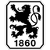
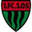
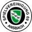
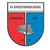
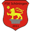
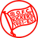
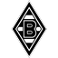
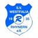
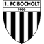
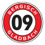

League tableOfficial table as of 2026-11-28. World = each club's world rank in our ratings.
Regionalliga - Bayern
| # | Club | P | W | D | L | GD | Pts | World |
|---|---|---|---|---|---|---|---|---|
| 1 | Memmingen | 19 | 13 | 3 | 3 | +15 | 42 | #1870 |
| 2 |  TSV 1860 München | 19 | 10 | 7 | 2 | +16 | 37 | #1113 |
| 3 | Buchbach | 19 | 10 | 5 | 4 | +11 | 35 | #2272 |
| 4 | Nürnberg II | 20 | 10 | 3 | 7 | +10 | 33 | #1564 |
| 5 | Illertissen | 20 | 8 | 7 | 5 | +13 | 31 | #1874 |
| 6 | SpVgg Unterhaching | 19 | 7 | 8 | 4 | +4 | 29 | #1913 |
| 7 | Augsburg II | 20 | 8 | 5 | 7 | -2 | 29 | #2658 |
| 8 | Bayreuth | 19 | 9 | 1 | 9 | +8 | 28 | #2570 |
| 9 | Schwaben Augsburg | 20 | 7 | 5 | 8 | -9 | 26 | #2778 |
| 10 | Eichstätt | 19 | 7 | 4 | 8 | -6 | 25 | #2676 |
| 11 | Bayern München II | 16 | 6 | 6 | 4 | +6 | 24 | #2044 |
| 12 |  FC Schweinfurt 05 | 20 | 6 | 6 | 8 | -10 | 24 | #2642 |
| 13 | Wacker Burghausen | 19 | 6 | 5 | 8 | +4 | 23 | #2701 |
| 14 | Eltersdorf | 18 | 5 | 6 | 7 | -1 | 21 | #2986 |
| 15 | Vilzing | 18 | 5 | 6 | 7 | -6 | 21 | #2691 |
| 16 |  Ansbach | 18 | 5 | 4 | 9 | -14 | 19 | #2867 |
| 17 | Aubstadt | 19 | 3 | 6 | 10 | -9 | 15 | #3045 |
| 18 | Greuther Fürth II | 18 | 3 | 5 | 10 | -12 | 14 | #3056 |
| 19 | Landsberg | 20 | 2 | 8 | 10 | -18 | 14 | #3224 |
Promotion - Regionalliga Play OffsRegionalliga Bayern (Relegation)Relegation
Our odds · 162 matches left, played out 4,000 times
| Team | 1st | Promotion play-off | Relegation |
|---|---|---|---|
| TSV 1860 München | 54% | 54% | – |
| Memmingen | 38% | 38% | – |
| Nürnberg II | 4% | 4% | – |
| Buchbach | 2% | 2% | – |
| Illertissen | 1% | 1% | <1% |
| SpVgg Unterhaching | 1% | 1% | <1% |
| Bayern München II | 1% | 1% | <1% |
| Bayreuth | <1% | <1% | 1% |
| Augsburg II | – | – | 2% |
| Eichstätt | – | – | 6% |
| Schwaben Augsburg | – | – | 9% |
| FC Schweinfurt 05 | – | – | 10% |
| Wacker Burghausen | – | – | 12% |
| Vilzing | – | – | 15% |
| Eltersdorf | – | – | 34% |
| Ansbach | – | – | 40% |
| Greuther Fürth II | – | – | 85% |
| Aubstadt | – | – | 88% |
| Landsberg | – | – | 98% |
Regionalliga - Nord
| # | Club | P | W | D | L | GD | Pts | World |
|---|---|---|---|---|---|---|---|---|
| 1 | Hannover 96 II | 19 | 12 | 4 | 3 | +16 | 40 | #1270 |
| 2 | VfB Oldenburg | 18 | 12 | 2 | 4 | +25 | 38 | #1130 |
| 3 | Weiche Flensburg | 19 | 12 | 2 | 5 | +25 | 38 | #1665 |
| 4 |  SV Drochtersen/Assel | 19 | 11 | 4 | 4 | +27 | 37 | #1088 |
| 5 | Phönix Lübeck | 18 | 10 | 5 | 3 | +26 | 35 | #1424 |
| 6 |  Schöningen | 18 | 10 | 3 | 5 | 0 | 33 | #2714 |
| 7 | VfB Lübeck | 18 | 6 | 7 | 5 | -1 | 25 | #2330 |
| 8 | Kickers Emden | 19 | 6 | 6 | 7 | -2 | 24 | #2048 |
| 9 | Atlas Delmenhorst | 17 | 5 | 7 | 5 | -3 | 22 | #2909 |
| 10 |  SSV Jeddeloh SSV Jeddeloh | 19 | 6 | 4 | 9 | -8 | 22 | #2210 |
| 11 |  Hamburger SV II Hamburger SV II | 19 | 7 | 1 | 11 | -10 | 22 | #2556 |
| 12 | Eimsbütteler TV | 18 | 5 | 5 | 8 | -14 | 20 | #3008 |
| 13 | Werder Bremen II | 19 | 5 | 3 | 11 | -9 | 18 | #2868 |
| 14 | Bremer SV | 18 | 5 | 3 | 10 | -15 | 18 | #2674 |
| 15 | HSC Hannover | 19 | 4 | 6 | 9 | -17 | 18 | #3135 |
| 16 | St. Pauli II | 17 | 5 | 2 | 10 | -1 | 17 | #2848 |
| 17 | Todesfelde | 19 | 4 | 5 | 10 | -25 | 17 | #3148 |
| 18 | Eintracht Norderstedt | 17 | 3 | 5 | 9 | -14 | 14 | #3131 |
Promotion - Regionalliga Play OffsRegionalliga North (Relegation)Relegation
Our odds · 141 matches left, played out 4,000 times
| Team | 1st | Promotion play-off | Relegation |
|---|---|---|---|
| VfB Oldenburg | 38% | 38% | – |
| SV Drochtersen/Assel | 23% | 23% | – |
| Hannover 96 II | 24% | 24% | – |
| Phönix Lübeck | 9% | 9% | – |
| Weiche Flensburg | 6% | 6% | – |
| Schöningen | <1% | <1% | <1% |
| Kickers Emden | – | – | 1% |
| VfB Lübeck | – | – | 1% |
| SSV Jeddeloh | – | – | 4% |
| Atlas Delmenhorst | – | – | 10% |
| Hamburger SV II | – | – | 10% |
| St. Pauli II | – | – | 30% |
| Bremer SV | – | – | 28% |
| Eimsbütteler TV | – | – | 33% |
| Werder Bremen II | – | – | 45% |
| HSC Hannover | – | – | 76% |
| Eintracht Norderstedt | – | – | 80% |
| Todesfelde | – | – | 81% |
Regionalliga - Nordost
| # | Club | P | W | D | L | GD | Pts | World |
|---|---|---|---|---|---|---|---|---|
| 1 |  FC Rot-Weiß Erfurt FC Rot-Weiß Erfurt | 18 | 13 | 4 | 1 | +34 | 43 | #815 |
| 2 | Chemnitzer FC | 17 | 11 | 3 | 3 | +19 | 36 | #1208 |
| 3 | Hallescher FC | 18 | 9 | 7 | 2 | +11 | 34 | #1075 |
| 4 | Erzgebirge Aue | 17 | 10 | 3 | 4 | +9 | 33 | #1296 |
| 5 | Greifswalder FC | 18 | 9 | 5 | 4 | +12 | 32 | #1452 |
| 6 | BFC Dynamo | 18 | 9 | 5 | 4 | +9 | 32 | #1670 |
| 7 | Lokomotive Leipzig | 18 | 8 | 6 | 4 | +9 | 30 | #1279 |
| 8 | Altglienicke | 17 | 9 | 3 | 5 | +9 | 30 | #1568 |
| 9 | FC Carl Zeiss Jena | 17 | 8 | 3 | 6 | +8 | 27 | #1336 |
| 10 | Magdeburg II | 17 | 6 | 4 | 7 | -1 | 22 | #2211 |
| 11 | FSV Zwickau | 17 | 5 | 5 | 7 | -9 | 20 | #2136 |
| 12 | BFC Preussen | 17 | 4 | 6 | 7 | -1 | 18 | #2367 |
| 13 | BSG Chemie Leipzig | 18 | 4 | 5 | 9 | -8 | 17 | #2574 |
| 14 | SV Babelsberg 03 | 18 | 4 | 4 | 10 | -15 | 16 | #2802 |
| 15 | Hertha BSC II | 17 | 2 | 7 | 8 | -15 | 13 | #2891 |
| 16 | Tasmania Berlin | 17 | 3 | 3 | 11 | -24 | 12 | #3152 |
| 17 | RSV Eintracht | 17 | 2 | 3 | 12 | -23 | 9 | #3228 |
| 18 | Luckenwalde | 18 | 2 | 2 | 14 | -24 | 8 | #3090 |
Promotion - 3. LigaRelegation
Our odds · 149 matches left, played out 4,000 times
| Team | 1st | Promotion | Relegation |
|---|---|---|---|
| FC Rot-Weiß Erfurt | 87% | 87% | – |
| Chemnitzer FC | 7% | 7% | – |
| Hallescher FC | 3% | 3% | – |
| Erzgebirge Aue | 2% | 2% | – |
| Greifswalder FC | 0% | 0% | – |
| Altglienicke | <1% | <1% | – |
| BFC Dynamo | <1% | <1% | – |
| Lokomotive Leipzig | <1% | <1% | – |
| FC Carl Zeiss Jena | <1% | <1% | – |
| Magdeburg II | – | – | – |
| FSV Zwickau | – | – | – |
| BFC Preussen | – | – | <1% |
| BSG Chemie Leipzig | – | – | 1% |
| SV Babelsberg 03 | – | – | 4% |
| Hertha BSC II | – | – | 9% |
| Tasmania Berlin | – | – | 38% |
| Luckenwalde | – | – | 71% |
| RSV Eintracht | – | – | 76% |
Regionalliga - SudWest
| # | Club | P | W | D | L | GD | Pts | World |
|---|---|---|---|---|---|---|---|---|
| 1 | SGV Freiberg | 18 | 9 | 8 | 1 | +26 | 35 | #1413 |
| 2 | VfR Mannheim | 16 | 10 | 5 | 1 | +16 | 35 | #2015 |
| 3 | VfR Aalen | 18 | 10 | 4 | 4 | +14 | 34 | #2308 |
| 4 |  Kickers Offenbach | 18 | 9 | 4 | 5 | +9 | 31 | #2145 |
| 5 | Stuttgarter Kickers | 17 | 9 | 3 | 5 | +7 | 30 | #2039 |
| 6 | Eintracht Trier | 17 | 9 | 3 | 5 | +1 | 30 | #2489 |
| 7 | FC 08 Homburg | 17 | 7 | 6 | 4 | +6 | 27 | #1769 |
| 8 | TSV Steinbach | 17 | 6 | 6 | 5 | +5 | 24 | #2069 |
| 9 |  Freiburg II Freiburg II | 18 | 5 | 6 | 7 | -3 | 21 | #2833 |
| 10 | Eintracht Frankfurt II | 17 | 6 | 2 | 9 | -2 | 20 | #3003 |
| 11 | FSV Frankfurt | 17 | 5 | 5 | 7 | -3 | 20 | #2477 |
| 12 | FC Astoria Walldorf | 18 | 5 | 5 | 8 | -4 | 20 | #2800 |
| 13 | SV Sandhausen | 16 | 5 | 5 | 6 | -4 | 20 | #2530 |
| 14 | Hessen Kassel | 18 | 5 | 3 | 10 | -15 | 18 | #2849 |
| 15 | SSV Ulm 1846 | 17 | 2 | 9 | 6 | -6 | 15 | #2354 |
| 16 | Kaiserslautern II | 18 | 3 | 6 | 9 | -18 | 15 | #3185 |
| 17 | FSV Mainz 05 II | 16 | 4 | 2 | 10 | -16 | 14 | #3024 |
| 18 | Barockstadt Fulda-Lehn. | 17 | 3 | 4 | 10 | -13 | 13 | #2944 |
Promotion - 3. LigaRelegation
Our odds · 151 matches left, played out 4,000 times
| Team | 1st | Promotion | Relegation |
|---|---|---|---|
| SGV Freiberg | 44% | 44% | – |
| VfR Mannheim | 38% | 38% | – |
| VfR Aalen | 6% | 6% | – |
| Stuttgarter Kickers | 5% | 5% | – |
| FC 08 Homburg | 4% | 4% | – |
| Kickers Offenbach | 3% | 3% | – |
| Eintracht Trier | 1% | 1% | <1% |
| TSV Steinbach | 1% | 1% | <1% |
| SV Sandhausen | <1% | <1% | 8% |
| FSV Frankfurt | – | – | 10% |
| Freiburg II | – | – | 18% |
| SSV Ulm 1846 | – | – | 26% |
| FC Astoria Walldorf | – | – | 25% |
| Eintracht Frankfurt II | – | – | 30% |
| Hessen Kassel | – | – | 45% |
| FSV Mainz 05 II | – | – | 71% |
| Barockstadt Fulda-Lehn. | – | – | 77% |
| Kaiserslautern II | – | – | 90% |
Regionalliga - West
| # | Club | P | W | D | L | GD | Pts | World |
|---|---|---|---|---|---|---|---|---|
| 1 | Rot-weiss Oberhausen | 18 | 14 | 2 | 2 | +26 | 44 | #1082 |
| 2 | Borussia Dortmund II | 18 | 12 | 5 | 1 | +19 | 41 | #1268 |
| 3 | Sportfreunde Siegen | 18 | 10 | 5 | 3 | +20 | 35 | #1629 |
| 4 |  Borussia M'gladbach II | 16 | 10 | 2 | 4 | +23 | 32 | #1551 |
| 5 | FC Gutersloh | 17 | 10 | 2 | 5 | +9 | 32 | #1926 |
| 6 | Köln II | 17 | 6 | 6 | 5 | +3 | 24 | #2509 |
| 7 | Bonner SC | 17 | 6 | 6 | 5 | +3 | 24 | #2447 |
| 8 |  Westfalia Rhynern | 18 | 6 | 5 | 7 | -4 | 23 | #3038 |
| 9 | Hilden | 17 | 6 | 5 | 6 | -7 | 23 | #2953 |
| 10 |  FC Bocholt | 17 | 5 | 7 | 5 | -2 | 22 | #2789 |
| 11 | Paderborn II | 17 | 5 | 6 | 6 | -1 | 21 | #2505 |
| 12 | Schalke 04 II | 17 | 6 | 2 | 9 | -8 | 20 | #2643 |
| 13 | Bochum II | 18 | 5 | 4 | 9 | -11 | 19 | #2966 |
| 14 |  SV Rodinghausen SV Rodinghausen | 17 | 4 | 5 | 8 | -5 | 17 | #3065 |
| 15 |  Bergisch Gladbach | 17 | 5 | 2 | 10 | -15 | 17 | #3199 |
| 16 | SG Wattenscheid 09 | 17 | 3 | 5 | 9 | -10 | 14 | #3189 |
| 17 | Wiedenbrück | 17 | 3 | 3 | 11 | -16 | 12 | #3231 |
| 18 | Sportfreunde Lotte | 17 | 1 | 4 | 12 | -24 | 7 | #3246 |
Promotion - 3. LigaRelegation
Our odds · 151 matches left, played out 4,000 times
| Team | 1st | Promotion | Relegation |
|---|---|---|---|
| Rot-weiss Oberhausen | 69% | 69% | – |
| Borussia Dortmund II | 25% | 25% | – |
| Borussia M'gladbach II | 4% | 4% | – |
| Sportfreunde Siegen | 1% | 1% | – |
| FC Gutersloh | <1% | <1% | – |
| Bonner SC | – | – | <1% |
| Köln II | – | – | 1% |
| Paderborn II | – | – | 2% |
| FC Bocholt | – | – | 3% |
| Hilden | – | – | 4% |
| Schalke 04 II | – | – | 5% |
| Westfalia Rhynern | – | – | 7% |
| Bochum II | – | – | 18% |
| SV Rodinghausen | – | – | 36% |
| Bergisch Gladbach | – | – | 58% |
| SG Wattenscheid 09 | – | – | 78% |
| Wiedenbrück | – | – | 91% |
| Sportfreunde Lotte | – | – | 99% |